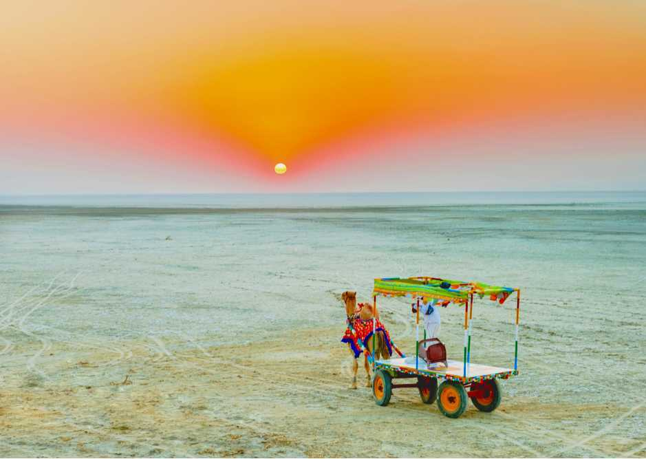
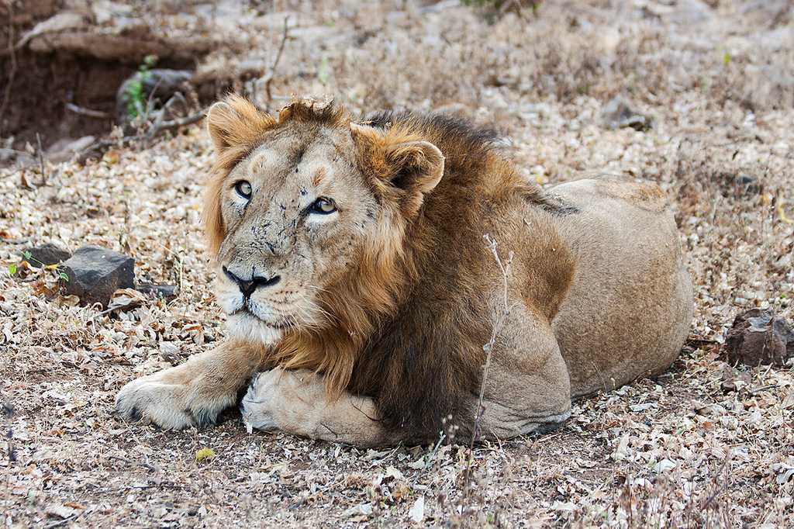

1. Ahmedabad Tourism
A rapidly growing metropolis, an industrial hub, an educational hotspot, and a city with a magnificent past – Ahmedabad is one of the most important cities in Gujarat. Located on the banks of the Sabarmati River, Ahmedabad is the former capital of Gujarat, and its delicious food, colourful culture is making it a fast-growing tourist destination. The historic city of Ahmedabad or the old part of the city was declared as the UNESCO World Heritage Site.
Home to a plethora of remarkable temples like Swaminarayan Temple, intriguing museums and classy markets, with a little bit of colonial history attached to it, Ahmedabad is an excellent example of how a city can still retain every bit of its old-world charm while still rapidly progressing on the path of globalisation.
Ahmedabad is famous for its textiles and its tie-dye bandhani handloom technique, which makes it a great place to shop. From bandhani sarees, dupattas to traditionally embroidered dress materials, and other local handicrafts.
Sabarmati Ashram, situated directly beside the Sabarmati river, is a quaint and peaceful ashram built by Mahatma Gandhi after he returned from South Africa. To this date, Gandhiji’s living quarters are preserved here and is now used as a museum where visitors can learn all about his life and his teachings. The infamous Dandi Salt March, which was a crucial point in India’s independence struggle, originated from this ashram.

2.Kutch Tourism
Virtually an island that resembles the shape of a tortoise, Kutch is an erstwhile princely state of India holding onto its grandeur nature from the past. Kutch is probably one of the most beautiful, yet surreal places in India with the vast expanses of the white salt desert. The place comes to life during the winters when the Rann Festival is held during December-February everywhere in which there are huge camp settlements with cultural programs, functions and adventure activities like hot-air ballooning.
Kutch is also among the largest district of India with a terribly low population density. Also, Kutch lies on the India-Pakistan border and you can see parts of Pakistan from Kutch. Kutch is also famous for crafts and embroidery works, Flamingo Sanctuary and Wild Ass Sanctuary. Bhuj is an ideal starting point to visit the Rann of Kutch. Beautiful beaches of Mandvi near Bhuj are also totally worth visiting during your trip to Kutch. Don't miss to see the ancient town of Dholavira.

3. Gir National Park Tourism
Gir National Park and Wildlife Sanctuary is the only remaining home for the Asiatic Lions. Located in Talala Gir in Gujarat, the Sanctuary is a part of Kathiawar- Gir dry deciduous forests ecoregion. Gir National Park is closed from 16 June to 15 October every year and the best time for wildlife spotting is April and May.
Gir provides you with the unique experience of visiting a place which almost singularly plays a crucial and defining role in the preservation and sustaining of a certain species. The preservation of these lions was initiated by the Nawab of Junagadh when these were just about to enter the phase of extinction due to hunting.
The official count said that there were 411 lions in 2010. Also, there are roughly different 2375 species of fauna here with 38 species of mammals, over 300 species of birds, 37 species of reptiles and over 2000 species of insects. Other important wildlife forms found here are leopard, chausingha, spotted deer, hyena, sambar deer and chinkara.